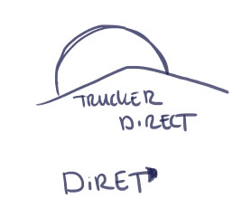
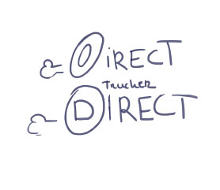
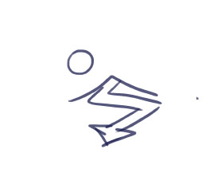
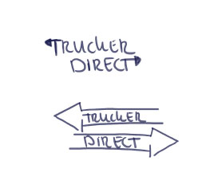
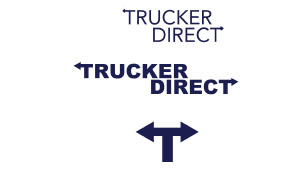

Ontwerpfase
Je definieert een concept voor een interactief mediaproduct als antwoord op het probleem van de klant.
Logo uitzoeken, wat past het beste bij een logistiek bedrijf.
Wat is belangrijk voor een app voor Truckers. Het moet overzichtelijk zijn en gauw “to the point” komen.
Toen we wisten wat we allemaal gingen doen, ben ik begonnen met het maken van het Logo en het designs. Ik heb gekozen voor Bootstrap en de kleuren van Bootstrap, omdat ik de enige media student was. Bootstrap is heel makkelijk voor Software engineers te snappen en als ik in tijdnood zou komen, dan kunnen zij mij meehelpen om alles in elkaar te zetten.
Logo
Voor het logo heb ik mezelf laten inspireren door andere logo’s en aan mijn medestudenten gevraagd wat zij een goed logo vonden.
Een vrachtwagen die snel gaat. Of richting de zonsondergang.
Het idee van de T splitsing vond ik toch wel het leukste omdat Truckerdirect met een T begint en met een T eindigt. Als er meer tijd voor was geweest, had ik waarschijnlijk een animatie gemaakt met het alleen T logo en de gehele tekst.
Daarna heb ik het logo in Photoshop gemaakt.
Om het schaalbaar te maken en te gebruiken voor elk platform of grootte, heb ik het logo in Vector gemaakt
Logo schetsen




Logo schetsen versie 1

Wireframes
De wireframes waren al gemaakt door de Software engineers. Iemand in onze groep werkte bij een logistiek bedrijf en hij wist beter dan ik, wat er nodig was voor de pagina.
2 designs heb ik gemaakt, zoals de wireframe het aangaf, deze heb ik normalmode en darkmode genoemd. Voor mijn inspiratiebronnen kwam ik toevallig een UX design tegen die ik heel gaaf vond en de andere was Ubereats.
Het uiteindelijke design
Final
Usertesten
Mensen zichzelf laten voorstellen, wie ze zijn, hoe oud ze zijn en wat voor baan ze hebben. Een profiel schetsen van de mensen wie we testen.
We gaan er even vanuit dat men al geregistreerd zijn en dat ze ingelogd zijn.De vraag voor de mensen is als je een naar jobs moet gaan, welk van de 3 designs denk je dat je het beste vindt passen.
Als je een rit wilt rijden.
Naar Users te gaan, bij elke designs. Dashboard is beginpunt
Ga naar Jobs - Naar Filled Jobs
Weer terug naar Dashboard - en naar Users
Resultaat Welk punt van 1 tot 10 geef u de applicatie?
Final
Een duidelijke verklaring en strategie over de doelgroep, business value en haalbaarheid